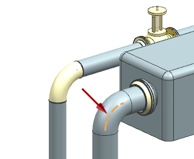
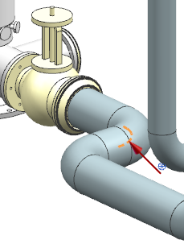
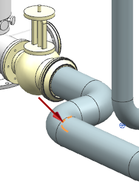

执行交互设计规则检查
-
在机械管线布置工具条上的设计规则下拉菜单中，选择交互检查 。
-
在违例组的过滤器列表中，选择跳过替代。
-
在导航违例下方，点击下一个 ，直到如图所示的折弯段在图形窗口中高亮显示。

对于这个违例，显示的文本为：
信息：Arc violates bend radius.(圆弧违反折弯半径)
设计规则：Curve Bend Radius.(曲线折弯半径)
忽略：是 -
点击完整的违例文本
 。
。Stock of diameter 323.900000 is assigned along a
segment which follows the arc whose bend radius is
only 300.000000. A larger bend radius is needed
to support the stocck.
(管线段中的型材直径为323.900000，连接它们的折弯段半径只
有300.00000，需要使用更大的折弯半径来支撑型材。) -
关闭信息窗口。
-
在导航违例下方，点击下一个 ，直到下一个折弯半径违例在视图中高亮显示。

-
再次点击下一个 ，直到第三个折弯半径违例高亮显示：

这三个违例通过增加拐角处的折弯半径就可以轻松纠正。
-
点击取消。